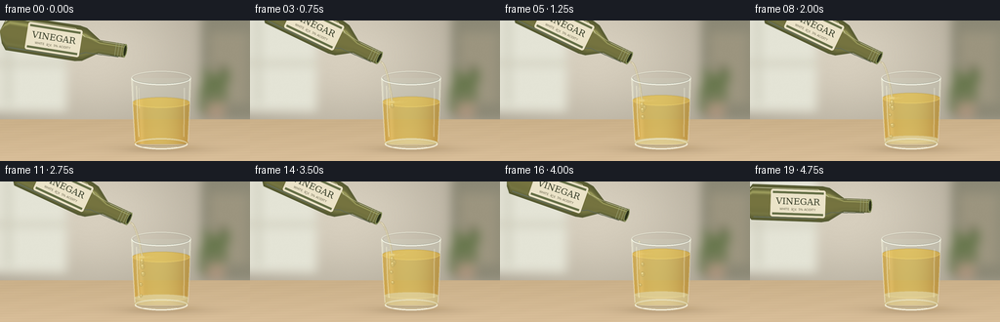
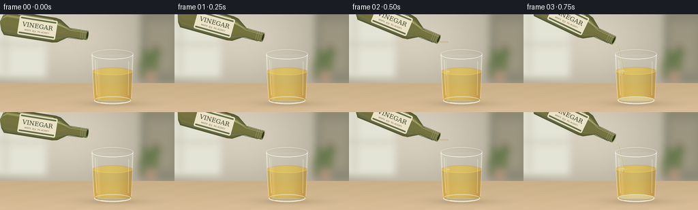
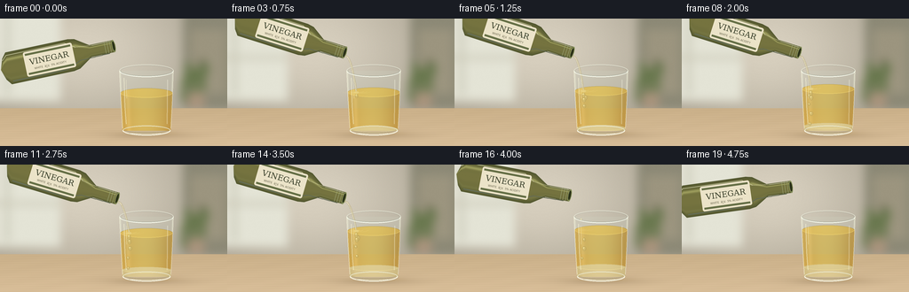
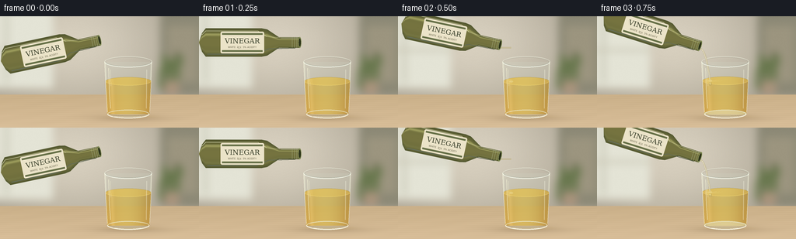

CODING AGENTS AS PIXEL WORLD MODELS
traex/GPT-6.1-Sol · phygen_140
点击播放 · 原生 RGB 像素
逐轮保存的候选
回放视频、检查图与代码变化。
每份候选均可单独播放。实际图片检查记录在下方工具轨迹中。
候选 01播放与检查图
点击播放 · 原生 RGB 像素


展开代码变化
--- 上一保存版本
+++ 本次保存版本
@@ -0,0 +1,222 @@
+from pathlib import Path
+import numpy as np
+from PIL import Image, ImageDraw, ImageFilter, ImageFont
+import artifact_io
+
+ROOT=Path(__file__).resolve().parent
+W,H,S=256,144,4
+WW,HH=W*S,H*S
+rng=np.random.default_rng(1840)
+Y,X=np.mgrid[0:HH,0:WW].astype(float); X/=S;Y/=S
+
+def ellipse(draw,box,fill,width=1,outline=None):
+ draw.ellipse(tuple(int(v*S) for v in box),fill=fill,outline=outline,width=max(1,int(width*S)))
+def line(draw,pts,fill,width=1):
+ draw.line([(int(x*S),int(y*S)) for x,y in pts],fill=fill,width=max(1,int(width*S)))
+def blend(arr,color,alpha):
+ a=np.clip(alpha,0,1)[...,None]
+ return arr*(1-a)+np.asarray(color)*a
+
+# Softly out-of-focus domestic setting and an oak counter, constructed from scratch.
+bg=np.zeros((HH,WW,3),float)
+light=np.exp(-((X-94)/135)**2-((Y-35)/90)**2)
+for c,(base,gain) in enumerate(zip((161,154,138),(55,54,53))):bg[:,:,c]=base+gain*light
+im=Image.fromarray(np.uint8(bg));d=ImageDraw.Draw(im)
+d.rectangle((0,0,68*S,93*S),fill=(228,228,214))
+d.rectangle((6*S,0,10*S,87*S),fill=(199,198,181))
+d.rectangle((0,42*S,68*S,46*S),fill=(205,203,185))
+d.rectangle((206*S,0,256*S,102*S),fill=(140,137,118))
+d.rectangle((215*S,12*S,254*S,85*S),fill=(156,149,127))
+d.rectangle((225*S,45*S,228*S,61*S),fill=(100,95,79))
+# A blurred green kitchen plant at the rear.
+for k in range(17):
+ xx=rng.uniform(204,232); yy=rng.uniform(56,91)
+ ellipse(d,(xx-3,yy-8,xx+4,yy+7),(104,119,77))
+ellipse(d,(211,83,231,102),(170,148,124))
+im=im.filter(ImageFilter.GaussianBlur(5*S));bg=np.asarray(im).astype(float)
+table=Y>101
+woodgrain=1.3*np.sin(Y*2.4+0.022*X)+.8*np.sin(Y*10+0.01*X)+.8*np.sin(X*.09+Y*.5)
+wood=np.stack([202+(Y-101)*.33+woodgrain,176+(Y-101)*.32+woodgrain,137+(Y-101)*.36+woodgrain],-1)
+bg=np.where(table[...,None],wood,bg)
+bg+=rng.normal(0,.23,(HH,WW,1))
+shadow=np.exp(-((X-166)/43)**2-((Y-131.3)/4.3)**2)*.22
+bg=blend(bg,(83,64,43),shadow)
+# Transmitted golden light on the wood.
+bg=blend(bg,(235,183,63),.14*np.exp(-((X-168)/25)**2-((Y-130)/2.1)**2))
+
+# Detailed bottle, in local coordinates with its open lip on the right.
+BW,BH=142*S,62*S
+by,bx=np.mgrid[0:BH,0:BW].astype(float);u=bx/S-134;v=by/S-31
+rad=np.interp(u,[-130,-126,-121,-50,-42,-27,-23,0,3],[0,12,18.5,18.5,17,7,7,7,0])
+mask=((u>=-130)&(u<=1)&(abs(v)<rad)).astype(float)
+q=v/np.maximum(rad,1)
+spec=np.exp(-((q+.55)/.095)**2)*.6+np.exp(-((q-.65)/.11)**2)*.13
+edge=np.sqrt(np.maximum(0,1-q*q))
+bott=np.stack([70+48*edge+77*spec,77+39*edge+78*spec,42+22*edge+54*spec],-1)
+bott=np.clip(bott,0,255)
+sprite=Image.fromarray(np.uint8(np.dstack([bott,mask*255])),'RGBA');d=ImageDraw.Draw(sprite)
+# Sides and shoulder highlights; bottle is translucent olive glass.
+line(d,[(8,21),(13,16),(80,16),(91,23),(110,25),(132,25)],(219,222,161,135),.7)
+line(d,[(15,46),(78,46),(94,39),(128,38)],(26,43,23,160),1)
+# Off-white, paper-textured vinegar label.
+d.rounded_rectangle((32*S,17*S,88*S,45*S),radius=2*S,fill=(235,227,200,255))
+d.rectangle((34*S,19*S,86*S,21*S),fill=(102,112,71,255))
+d.rectangle((34*S,41*S,86*S,43*S),fill=(102,112,71,255))
+font=ImageFont.truetype('/usr/share/fonts/truetype/dejavu/DejaVuSerif.ttf',9*S)
+small=ImageFont.truetype('/usr/share/fonts/truetype/dejavu/DejaVuSans.ttf',3*S)
+d.text((60*S,29*S),'VINEGAR',font=font,anchor='mm',fill=(58,64,43,255))
+d.text((60*S,37*S),'WHITE ⢠5% ACIDITY',font=small,anchor='mm',fill=(104,100,76,255))
+# Uncapped threaded neck.
+for xx in (124,127,130):
+ line(d,[(xx,24.4),(xx,37.5)],(134,145,95,205),.55)
+
+
+def bottle_pose(t):
+ if t<.6:
+ s=t/.6;return 128+4*s,31+7*s,9+16*s
+ if t<3.8:
+ return 132+0.5*np.sin(t*1.1),38+.5*np.sin(t),25+.8*np.sin(t*1.2)
+ s=min(1,(t-3.8)/.8)
+ return 132-9*s,38-13*s,25-23*s
+
+
+def draw_bottle(im,t):
+ mx,my,ang=bottle_pose(t);a=np.deg2rad(ang);c=np.cos(a);s=np.sin(a)
+ # Inverse affine projection into the frame; exact anchor on the bottle lip.
+ coeff=(c,s,134*S-c*mx*S-s*my*S,-s,c,31*S+s*mx*S-c*my*S)
+ rot=sprite.transform((WW,HH),Image.Transform.AFFINE,coeff,Image.Resampling.BICUBIC)
+ im.alpha_composite(rot)
+ layer=Image.new('RGBA',(WW,HH));dd=ImageDraw.Draw(layer)
+ # Elliptical open mouth, oriented along bottle axis. Projected rim.
+ pts=[];inside=[]
+ for a0 in np.linspace(0,2*np.pi,60):
+ uu=2.0*np.cos(a0);vv=7*np.sin(a0)
+ pts.append(((mx+c*uu-s*vv)*S,(my+s*uu+c*vv)*S))
+ uu=1.2*np.cos(a0);vv=5.3*np.sin(a0)
+ inside.append(((mx+c*uu-s*vv)*S,(my+s*uu+c*vv)*S))
+ dd.polygon(pts,fill=(131,141,88,255));dd.polygon(inside,fill=(43,49,24,255))
+ im.alpha_composite(layer)
+ return mx,my,ang
+
+
+def liquid_drop(draw,x,y,rx,ry):
+ # Clear aqueous globules, with amber refraction at their boundary.
+ ellipse(draw,(x-rx,y-ry,x+rx,y+ry),(213,192,116,170),outline=(140,122,60,170),width=.35)
+ ellipse(draw,(x-rx*.64,y-ry*.63,x-rx*.08,y-ry*.15),(255,245,183,200))
+ line(draw,[(x+rx*.45,y),(x+rx*.43,y+ry*.5)],(156,141,81,155),.35)
+
+
+def frame(t):
+ arr=bg.copy()
+ cx=165.;top=59.;bottom=126.3
+ radius=30.4-(Y-top)*.047
+ nx=(X-cx)/radius
+ body=(Y>=top)&(Y<bottom+4.8*np.sqrt(np.maximum(0,1-nx*nx)))&(abs(nx)<1)
+ # Realistic transparent glass: subtle background refraction and edge reflection.
+ xr=np.clip((cx+(X-cx)*(.86+.12*abs(nx)))*S,0,WW-1).astype(int)
+ refr=bg[np.arange(HH)[:,None],xr]
+ arr=np.where(body[...,None],.84*refr+.16*np.array([211,221,204]),arr)
+ edges=np.exp(-((abs(nx)-.973)/.025)**2)*.40*body
+ arr=blend(arr,(244,245,220),edges)
+
+ poured=np.clip((t-.5)/3.3,0,1)
+ amount=10.0*poured
+ level=84.0-amount
+ interface=125.8-amount
+ rn=(X-cx)/(30.4-(Y-top)*.047)
+ # Oil volume and its rounded top meniscus.
+ topback=level-5.4*np.sqrt(np.maximum(0,1-rn*rn))
+ oil=body&(Y>=topback)&(Y<=126.5)
+ o=np.stack([207+22*(1-rn**2)-23*(rn+1)/2+5*np.sin(Y*.05),
+ 151+40*(1-rn**2)-22*(rn+1)/2,
+ 40+35*(1-rn**2)-11*(rn+1)/2],-1)
+ o+=18*np.exp(-((rn+.73)/.09)**2)[...,None]
+ arr=blend(arr,o,oil*.68)
+ surface=oil&(((X-cx)/29.2)**2+((Y-level)/5.4)**2<1)
+ arr=blend(arr,(238,204,94),surface*.38)
+ if amount>.1:
+ # Denser vinegar accumulates underneath, never mixing uniformly with the oil.
+ bound=interface-3.4*np.sqrt(np.maximum(0,1-rn*rn))
+ aqueous=body&(Y>=bound)&(Y<127)
+ clear=np.stack([208+16*(1-rn**2),197+12*(1-rn**2),151+15*(1-rn**2)],-1)
+ arr=blend(arr,clear,aqueous*.72)
+ boundary=aqueous&(((X-cx)/26.8)**2+((Y-interface)/3.4)**2<1)
+ arr=blend(arr,(224,209,144),boundary*.34)
+ im=Image.fromarray(np.uint8(np.clip(arr,0,255))).convert('RGBA')
+ ly=Image.new('RGBA',(WW,HH));d=ImageDraw.Draw(ly)
+ # Back rim and the reflected room in the upper clear section.
+ ellipse(d,(134.4,51.8,195.6,66.2),None,outline=(233,234,217,190),width=.75)
+ ellipse(d,(136.0,53.2,194.,65.0),None,outline=(112,124,114,85),width=.4)
+ # Fine elliptical sheen at the oil-air boundary.
+ box=(135.6,level-5.4,194.4,level+5.4)
+ d.arc(tuple(int(v*S) for v in box),0,175,fill=(255,228,123,135),width=2)
+ d.arc(tuple(int(v*S) for v in box),185,355,fill=(151,129,56,90),width=2)
+ if amount>.7:
+ box=(138.2,interface-3.4,191.8,interface+3.4)
+ d.arc(tuple(int(v*S) for v in box),0,180,fill=(247,229,157,150),width=2)
+ # Droplets fall through the lighter oil, deform, then collect in the clear lower layer.
+ if .65<t<4.6:
+ for k in range(9):
+ birth=.58+k*.37
+ age=t-birth
+ if age<0:continue
+ yy=84-10*np.clip((birth-.5)/3.3,0,1)+20.5*age+3*age*age
+ if yy>interface-1.7:continue
+ xx=145.3+1.5*np.sin(k*1.9)+1.0*np.sin(age*3+k)
+ rx=1.65+0.35*np.sin(k*2)
+ ry=rx*(1.1+.35*np.exp(-age*2))
+ liquid_drop(d,xx,yy,rx,ry)
+ if .75<t<3.9:
+ liquid_drop(d,145.4,level+4.8,1.65,3.2)
+ liquid_drop(d,146.0,level+10,1.9,2.7)
+ # Quiet concentric ripples from a narrow, gentle pour.
+ if .6<t<4.15:
+ strength=1 if t<3.8 else max(0,(4.15-t)/.35)
+ for j in range(3):
+ rr=3+((t*7+j*4)%14)
+ box=(145.5-rr,level-1.0-rr*.18,145.5+rr,level-1+rr*.18)
+ d.arc(tuple(int(v*S) for v in box),5,165,fill=(255,239,162,int((1-rr/21)*110*strength)),width=2)
+ im.alpha_composite(ly)
+ # Incoming thin stream, accelerated by gravity and transparent at its centre.
+ mx,my,ang=bottle_pose(t)
+ layer=Image.new('RGBA',(WW,HH));d=ImageDraw.Draw(layer)
+ if .5<=t<=3.85:
+ origin=(mx+1.0,my+3.8)
+ active=min(1,(t-.5)/.14)*min(1,(3.93-t)/.15)
+ length=(level-origin[1])*active
+ pts=[]
+ for z in np.linspace(0,1,65):
+ yy=origin[1]+length*z
+ xx=origin[0]+(145.5-origin[0])*np.sqrt(z)+.19*np.sin(z*13+t*5)*z
+ pts.append((xx,yy))
+ line(d,pts,(183,169,123,165),2.2)
+ line(d,[(x-.35,y) for x,y in pts],(250,245,217,220),.72)
+ line(d,[(x+.48,y) for x,y in pts],(215,203,158,130),.55)
+ ellipse(d,(143.1,level-1,148.1,level+1.5),(236,221,156,110))
+ if 3.85<t<4.27:
+ age=t-3.85
+ yy=45+100*age+80*age*age
+ if yy<level:
+ ellipse(d,(141.5,yy-1.5,143.5,yy+1.8),(234,226,191,210),outline=(163,154,119,140),width=.35)
+ im.alpha_composite(layer)
+ draw_bottle(im,t)
+ # Front surface of tumbler: delicate double rim, vertical glints, thick clear foot.
+ ly=Image.new('RGBA',(WW,HH));d=ImageDraw.Draw(ly)
+ d.arc((int(134.4*S),int(51.8*S),int(195.6*S),int(66.2*S)),0,180,fill=(252,252,238,235),width=4)
+ d.arc((int(135.5*S),int(53.0*S),int(194.5*S),int(65.1*S)),0,180,fill=(151,163,149,125),width=2)
+ line(d,[(134.7,59),(136,91),(138.0,124)],(251,250,226,155),.8)
+ line(d,[(195.2,59),(194.0,91),(192.4,124)],(248,247,225,180),.65)
+ line(d,[(139.7,67),(140.6,99),(142.0,119)],(255,253,222,118),1.2)
+ line(d,[(142.2,69),(142.7,90)],(255,252,216,110),.55)
+ line(d,[(188.6,69),(188.0,119)],(255,252,232,90),1.2)
+ ellipse(d,(138,120.8,192,132),None,outline=(237,238,217,190),width=1.0)
+ d.arc((138*S,int(120.8*S),192*S,132*S),0,180,fill=(253,252,235,235),width=5)
+ d.arc((140*S,122*S,190*S,129*S),0,180,fill=(118,115,89,125),width=2)
+ line(d,[(145,129.5),(181,129.5)],(248,249,229,145),.7)
+ im.alpha_composite(ly)
+ # Small lens softness, antialiasing and restrained photographic contrast.
+ return np.asarray(im.convert('RGB').resize((W,H),Image.Resampling.LANCZOS),dtype=np.uint8)
+
+frames=np.stack([frame(i/4) for i in range(20)])
+artifact_io.save(frames,ROOT)
+print('Saved RGB video:',frames.shape)
候选 02播放与检查图
点击播放 · 原生 RGB 像素


展开代码变化
--- 上一保存版本
+++ 本次保存版本
@@ -73,11 +73,11 @@
def bottle_pose(t):
if t<.6:
- s=t/.6;return 128+4*s,31+7*s,9+16*s
+ s=t/.6;return 128+4*s,31+7*s,-12+29*s
if t<3.8:
- return 132+0.5*np.sin(t*1.1),38+.5*np.sin(t),25+.8*np.sin(t*1.2)
+ return 132+0.5*np.sin(t*1.1),38+.5*np.sin(t),17+.8*np.sin(t*1.2)
s=min(1,(t-3.8)/.8)
- return 132-9*s,38-13*s,25-23*s
+ return 132-9*s,38-13*s,17-25*s
def draw_bottle(im,t):
可观测工具轨迹
实际执行的命令与返回图片。
命令 1exit 0
/bin/bash -lc 'ls -la && cat prompt.txt && cat GENERATION_RULES.md && cat task_spec.json'
命令 2exit 0
/bin/bash -lc 'cat artifact_io.py'
命令 3exit 0
/bin/bash -lc 'fc-list | head -15'
命令 4exit 0
/bin/bash -lc "cat > generate.py <<'PY'
from pathlib import Path
import numpy as np
from PIL import Image, ImageDraw, ImageFilter, ImageFont
import artifact_io
ROOT=Path(__file__).resolve().parent
W,H,S=256,144,4
WW,HH=W*S,H*S
rng=np.random.default_rng(1840)
Y,X=np.mgrid[0:HH,0:WW].astype(float); X/=S;Y/=S
def ellipse(draw,box,fill,width=1,outline=None):
draw.ellipse(tuple(int(v*S) for v in box),fill=fill,outline=outline,width=max(1,int(width*S)))
def line(draw,pts,fill,width=1):
draw.line([(int(x*S),int(y*S)) for x,y in pts],fill=fill,width=max(1,int(width*S)))
def blend(arr,color,alpha):
a=np.clip(alpha,0,1)[...,None]
return arr*(1-a)+np.asarray(color)*a
# Softly out-of-focus domestic setting and an oak counter, constructed from scratch.
bg=np.zeros((HH,WW,3),float)
light=np.exp(-((X-94)/135)**2-((Y-35)/90)**2)
for c,(base,gain) in enumerate(zip((161,154,138),(55,54,53))):bg[:,:,c]=base+gain*light
im=Image.fromarray(np.uint8(bg));d=ImageDraw.Draw(im)
d.rectangle((0,0,68*S,93*S),fill=(228,228,214))
d.rectangle((6*S,0,10*S,87*S),fill=(199,198,181))
d.rectangle((0,42*S,68*S,46*S),fill=(205,203,185))
d.rectangle((206*S,0,256*S,102*S),fill=(140,137,118))
d.rectangle((215*S,12*S,254*S,85*S),fill=(156,149,127))
d.rectangle((225*S,45*S,228*S,61*S),fill=(100,95,79))
# A blurred green kitchen plant at the rear.
for k in range(17):
xx=rng.uniform(204,232); yy=rng.uniform(56,91)
ellipse(d,(xx-3,yy-8,xx+4,yy+7),(104,119,77))
ellipse(d,(211,83,231,102),(170,148,124))
im=im.filter(ImageFilter.GaussianBlur(5*S));bg=np.asarray(im).astype(float)
table=Y>101
woodgrain=1.3*np.sin(Y*2.4+0.022*X)+.8*np.sin(Y*10+0.01*X)+.8*np.sin(X*.09+Y*.5)
wood=np.stack([202+(Y-101)*.33+woodgrain,176+(Y-101)*.32+woodgrain,137+(Y-101)*.36+woodgrain],-1)
bg=np.where(table[...,None],wood,bg)
bg+=rng.normal(0,.23,(HH,WW,1))
shadow=np.exp(-((X-166)/43)**2-((Y-131.3)/4.3)**2)*.22
bg=blend(bg,(83,64,43),shadow)
# Transmitted golden light on the wood.
bg=blend(bg,(235,183,63),.14*np.exp(-((X-168)/25)**2-((Y-130)/2.1)**2))
# Detailed bottle, in local coordinates with its open lip on the right.
BW,BH=142*S,62*S
by,bx=np.mgrid[0:BH,0:BW].astype(float);u=bx/S-134;v=by/S-31
rad=np.interp(u,[-130,-126,-121,-50,-42,-27,-23,0,3],[0,12,18.5,18.5,17,7,7,7,0])
mask=((u>=-130)&(u<=1)&(abs(v)<rad)).astype(float)
q=v/np.maximum(rad,1)
spec=np.exp(-((q+.55)/.095)**2)*.6+np.exp(-((q-.65)/.11)**2)*.13
edge=np.sqrt(np.maximum(0,1-q*q))
bott=np.stack([70+48*edge+77*spec,77+39*edge+78*spec,42+22*edge+54*spec],-1)
bott=np.clip(bott,0,255)
sprite=Image.fromarray(np.uint8(np.dstack([bott,mask*255])),'RGBA');d=ImageDraw.Draw(sprite)
# Sides and shoulder highlights; bottle is translucent olive glass.
line(d,[(8,21),(13,16),(80,16),(91,23),(110,25),(132,25)],(219,222,161,135),.7)
line(d,[(15,46),(78,46),(94,39),(128,38)],(26,43,23,160),1)
# Off-white, paper-textured vinegar label.
d.rounded_rectangle((32*S,17*S,88*S,45*S),radius=2*S,fill=(235,227,200,255))
d.rectangle((34*S,19*S,86*S,21*S),fill=(102,112,71,255))
d.rectangle((34*S,41*S,86*S,43*S),fill=(102,112,71,255))
font=ImageFont.truetype('/usr/share/fonts/truetype/dejavu/DejaVuSerif.ttf',9*S)
small=ImageFont.truetype('/usr/share/fonts/truetype/dejavu/DejaVuSans.ttf',3*S)
d.text((60*S,29*S),'VINEGAR',font=font,anchor='mm',fill=(58,64,43,255))
d.text((60*S,37*S),'WHITE ⢠5% ACIDITY',font=small,anchor='mm',fill=(104,100,76,255))
# Uncapped threaded neck.
for xx in (124,127,130):
line(d,[(xx,24.4),(xx,37.5)],(134,145,95,205),.55)
def bottle_pose(t):
if t<.6:
s=t/.6;return 128+4*s,31+7*s,9+16*s
if t<3.8:
return 132+0.5*np.sin(t*1.1),38+.5*np.sin(t),25+.8*np.sin(t*1.2)
s=min(1,(t-3.8)/.8)
return 132-9*s,38-13*s,25-23*s
def draw_bottle(im,t):
mx,my,ang=bottle_pose(t);a=np.deg2rad(ang);c=np.cos(a);s=np.sin(a)
# Inverse affine projection into the frame; exact anchor on the bottle lip.
coeff=(c,s,134*S-c*mx*S-s*my*S,-s,c,31*S+s*mx*S-c*my*S)
rot=sprite.transform((WW,HH),Image.Transform.AFFINE,coeff,Image.Resampling.BICUBIC)
im.alpha_composite(rot)
layer=Image.new('RGBA',(WW,HH));dd=ImageDraw.Draw(layer)
# Elliptical open mouth, oriented along bottle axis. Projected rim.
pts=[];inside=[]
for a0 in np.linspace(0,2*np.pi,60):
uu=2.0*np.cos(a0);vv=7*np.sin(a0)
pts.append(((mx+c*uu-s*vv)*S,(my+s*uu+c*vv)*S))
uu=1.2*np.cos(a0);vv=5.3*np.sin(a0)
inside.append(((mx+c*uu-s*vv)*S,(my+s*uu+c*vv)*S))
dd.polygon(pts,fill=(131,141,88,255));dd.polygon(inside,fill=(43,49,24,255))
im.alpha_composite(layer)
return mx,my,ang
def liquid_drop(draw,x,y,rx,ry):
# Clear aqueous globules, with amber refraction at their boundary.
ellipse(draw,(x-rx,y-ry,x+rx,y+ry),(213,192,116,170),outline=(140,122,60,170),width=.35)
ellipse(draw,(x-rx*.64,y-ry*.63,x-rx*.08,y-ry*.15),(255,245,183,200))
line(draw,[(x+rx*.45,y),(x+rx*.43,y+ry*.5)],(156,141,81,155),.35)
def frame(t):
arr=bg.copy()
cx=165.;top=59.;bottom=126.3
radius=30.4-(Y-top)*.047
nx=(X-cx)/radius
body=(Y>=top)&(Y<bottom+4.8*np.sqrt(np.maximum(0,1-nx*nx)))&(abs(nx)<1)
# Realistic transparent glass: subtle background refraction and edge reflection.
xr=np.clip((cx+(X-cx)*(.86+.12*abs(nx)))*S,0,WW-1).astype(int)
refr=bg[np.arange(HH)[:,None],xr]
arr=np.where(body[...,None],.84*refr+.16*np.array([211,221,204]),arr)
edges=np.exp(-((abs(nx)-.973)/.025)**2)*.40*body
arr=blend(arr,(244,245,220),edges)
poured=np.clip((t-.5)/3.3,0,1)
amount=10.0*poured
level=84.0-amount
interface=125.8-amount
rn=(X-cx)/(30.4-(Y-top)*.047)
# Oil volume and its rounded top meniscus.
topback=level-5.4*np.sqrt(np.maximum(0,1-rn*rn))
oil=body&(Y>=topback)&(Y<=126.5)
o=np.stack([207+22*(1-rn**2)-23*(rn+1)/2+5*np.sin(Y*.05),
151+40*(1-rn**2)-22*(rn+1)/2,
40+35*(1-rn**2)-11*(rn+1)/2],-1)
o+=18*np.exp(-((rn+.73)/.09)**2)[...,None]
arr=blend(arr,o,oil*.68)
surface=oil&(((X-cx)/29.2)**2+((Y-level)/5.4)**2<1)
arr=blend(arr,(238,204,94),surface*.38)
if amount>.1:
# Denser vinegar accumulates underneath, never mixing uniformly with the oil.
bound=interface-3.4*np.sqrt(np.maximum(0,1-rn*rn))
aqueous=body&(Y>=bound)&(Y<127)
clear=np.stack([208+16*(1-rn**2),197+12*(1-rn**2),151+15*(1-rn**2)],-1)
arr=blend(arr,clear,aqueous*.72)
boundary=aqueous&(((X-cx)/26.8)**2+((Y-interface)/3.4)**2<1)
arr=blend(arr,(224,209,144),boundary*.34)
im=Image.fromarray(np.uint8(np.clip(arr,0,255))).convert('RGBA')
ly=Image.new('RGBA',(WW,HH));d=ImageDraw.Draw(ly)
# Back rim and the reflected room in the upper clear section.
ellipse(d,(134.4,51.8,195.6,66.2),None,outline=(233,234,217,190),width=.75)
ellipse(d,(136.0,53.2,194.,65.0),None,outline=(112,124,114,85),width=.4)
# Fine elliptical sheen at the oil-air boundary.
box=(135.6,level-5.4,194.4,level+5.4)
d.arc(tuple(int(v*S) for v in box),0,175,fill=(255,228,123,135),width=2)
d.arc(tuple(int(v*S) for v in box),185,355,fill=(151,129,56,90),width=2)
if amount>.7:
box=(138.2,interface-3.4,191.8,interface+3.4)
d.arc(tuple(int(v*S) for v in box),0,180,fill=(247,229,157,150),width=2)
# Droplets fall through the lighter oil, deform, then collect in the clear lower layer.
if .65<t<4.6:
for k in range(9):
birth=.58+k*.37
age=t-birth
if age<0:continue
yy=84-10*np.clip((birth-.5)/3.3,0,1)+20.5*age+3*age*age
if yy>interface-1.7:continue
xx=145.3+1.5*np.sin(k*1.9)+1.0*np.sin(age*3+k)
rx=1.65+0.35*np.sin(k*2)
ry=rx*(1.1+.35*np.exp(-age*2))
liquid_drop(d,xx,yy,rx,ry)
if .75<t<3.9:
liquid_drop(d,145.4,level+4.8,1.65,3.2)
liquid_drop(d,146.0,level+10,1.9,2.7)
# Quiet concentric ripples from a narrow, gentle pour.
if .6<t<4.15:
strength=1 if t<3.8 else max(0,(4.15-t)/.35)
for j in range(3):
rr=3+((t*7+j*4)%14)
box=(145.5-rr,level-1.0-rr*.18,145.5+rr,level-1+rr*.18)
d.arc(tuple(int(v*S) for v in box),5,165,fill=(255,239,162,int((1-rr/21)*110*strength)),width=2)
im.alpha_composite(ly)
# Incoming thin stream, accelerated by gravity and transparent at its centre.
mx,my,ang=bottle_pose(t)
layer=Image.new('RGBA',(WW,HH));d=ImageDraw.Draw(layer)
if .5<=t<=3.85:
origin=(mx+1.0,my+3.8)
active=min(1,(t-.5)/.14)*min(1,(3.93-t)/.15)
length=(level-origin[1])*active
pts=[]
for z in np.linspace(0,1,65):
yy=origin[1]+length*z
xx=origin[0]+(145.5-origin[0])*np.sqrt(z)+.19*np.sin(z*13+t*5)*z
pts.append((xx,yy))
line(d,pts,(183,169,123,165),2.2)
line(d,[(x-.35,y) for x,y in pts],(250,245,217,220),.72)
line(d,[(x+.48,y) for x,y in pts],(215,203,158,130),.55)
ellipse(d,(143.1,level-1,148.1,level+1.5),(236,221,156,110))
if 3.85<t<4.27:
age=t-3.85
yy=45+100*age+80*age*age
if yy<level:
ellipse(d,(141.5,yy-1.5,143.5,yy+1.8),(234,226,191,210),outline=(163,154,119,140),width=.35)
im.alpha_composite(layer)
draw_bottle(im,t)
# Front surface of tumbler: delicate double rim, vertical glints, thick clear foot.
ly=Image.new('RGBA',(WW,HH));d=ImageDraw.Draw(ly)
d.arc((int(134.4*S),int(51.8*S),int(195.6*S),int(66.2*S)),0,180,fill=(252,252,238,235),width=4)
d.arc((int(135.5*S),int(53.0*S),int(194.5*S),int(65.1*S)),0,180,fill=(151,163,149,125),width=2)
line(d,[(134.7,59),(136,91),(138.0,124)],(251,250,226,155),.8)
line(d,[(195.2,59),(194.0,91),(192.4,124)],(248,247,225,180),.65)
line(d,[(139.7,67),(140.6,99),(142.0,119)],(255,253,222,118),1.2)
line(d,[(142.2,69),(142.7,90)],(255,252,216,110),.55)
line(d,[(188.6,69),(188.0,119)],(255,252,232,90),1.2)
ellipse(d,(138,120.8,192,132),None,outline=(237,238,217,190),width=1.0)
d.arc((138*S,int(120.8*S),192*S,132*S),0,180,fill=(253,252,235,235),width=5)
d.arc((140*S,122*S,190*S,129*S),0,180,fill=(118,115,89,125),width=2)
line(d,[(145,129.5),(181,129.5)],(248,249,229,145),.7)
im.alpha_composite(ly)
# Small lens softness, antialiasing and restrained photographic contrast.
return np.asarray(im.convert('RGB').resize((W,H),Image.Resampling.LANCZOS),dtype=np.uint8)
frames=np.stack([frame(i/4) for i in range(20)])
artifact_io.save(frames,ROOT)
print('Saved RGB video:',frames.shape)
PY
python generate.py"命令 5exit 0
/bin/bash -lc "python - <<'PY'
p='generate.py'
s=open(p).read().replace(\"'WHITE ⢠5% ACIDITY'\",\"'WHITE - 5% ACIDITY'\").replace('31+7*s,9+16*s','31+7*s,-12+29*s').replace('25+.8*np.sin(t*1.2)','17+.8*np.sin(t*1.2)').replace('38-13*s,25-23*s','38-13*s,17-25*s')
open(p,'w').write(s)
PY
python generate.py"命令 6exit 1
/bin/bash -lc 'command -v ffmpeg && ffmpeg -y -loglevel error -framerate 4 -i frames/%02d.png -c:v libx264 -pix_fmt yuv420p -r 4 video.mp4 && ls -lh pixels.npz index.html inspection.png video.mp4'
视觉工具实际返回图片 1

视觉工具实际返回图片 2

保存候选 2 份；完成命令 6 次；可验证图片返回 2 张。原始 API 响应与完整日志保留在本地。